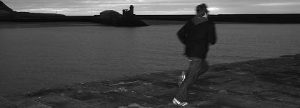

Top Ten Records To Run To (NR10)
By Neil Insh
No Ripcord is celebrating its tenth anniversary with a series of special features, which will run throughout the month of April. This musical ode to the art of running comes from the dusty keyboard of Neil Insh. Why not dust down your trainers and join him on the road?

10. The Ruby Suns – Sea Lion
Running into large housed unknown regions in darkness, following the scent doubling back awash with horrors. Not the best we have yet to see from this band, but still inventive, interesting, atmospheric and engrossing. Hard to predict at times, but their adventurousness is promising, and fits well with an aimless sprint into the black. The early Hispanic numbers bring you into a warmth that’s stolen from under you, peering into glowing windows for a split second. Vibrations and explosions, completely synthetic, acknowledged falsities and failures.
9. Au – Verbs
Caught in the rain running at night – perfect expansive record to get you home. Suddenly at the bypass, caught in a rose bush, jumped in a taxi, only enough to get half way. Discovering new boroughs and amalgamated towns. Likely recorded all in one room, Verbs feels like one long communal dream percolated through twinkling piano, spontaneous, subtly structured like train tracks, suddenly at the viaduct and back across. Marching rhythms and Prussian blue sweetness, unawares of hauntings.
8. Boards of Canada – Geogaddi
Underrated, underestimated - terrifying and sublime, guttural, subconscious, unconscious. On a bus to the city limits, running down the Victorian line. There’s somehow that they get underneath to dreams of unspecific times, events summarized and coagulated into a soup of non-events, through wails, learning, the unknown, the ‘new’. Terrifyingly poignant and cathartic.
7. The Microphones – Song Islands
More so than any other record, there was a linear rhythm – something pulsating towards a march, a march of life and death, earthy but typically romantic and entirely (sometimes endearingly) solipsistic. Running past garden plotlands northward on the Union Canal, hot perspiration. Phil Elverum was briefly very great, but became too bound up in theory, too obsessed with his own lifestyle, which was ultimately as delusional and illusory as the opposite end of the scale. It was sad to watch, as passion in love was redirected to some sort of pantheistic love of everything, expanse, creation, solipsism. “Little bird, I invite you...” I like birds too, but instinctually they fear man, with good reason. Good to enjoy nature on a hot summer’s day, though.
6. A Sunny Day in Glasgow – Scribble Mural Comic Journal
Vibrating through parks, streets with imaginings, stone steps and made up histories. A thousand summers. The atmosphere is rooted in art school reverie that I never experienced, though it allures and encourages empathy like the faded dreams of Lanark. Far from the childhood wonder and terror remembrances of Boards of Canada, rooted in the unprecedented, illusory directional paths of early adulthood, in new wave and art rock, though the paths which were real were the creative and emotional leaps and bounds.
5. Autechre – Quaristice
Hot-footing past shattered beige factories and corrugated industrial breathing apparatus outlets: electronic dogs and alarm bells, ominous carpet chords, swirling blended electrical parts, murderous expressive intertwining drills. Music for Eraserhead jogs, always undermining the terror with luxurious ambience, always changing contexts, hostile and childlike, ambivalent and relentless – embryonic, tactless creatures. Ran out to a council estate of tin, toxic high-rises midst polluted pine trees past Victorian canal bridges. A flurry of contradictions, obsession with modernity, with industry, with objectivity and with abstracted idiocy.
4. Outputmessage – Nebulae
Shimmering, translucent, efficacious. Powering through ethereal remembrances, tall trees, enveloping, suffocating, revitalizing.
3. Rachels – Systems/Layers
A series of Debussy-esque chamber songs conjoined and augmented by field recordings. The compositions ebb and flow, flickering and flitting around communal and personal expanses, the space of each piece licks and shudders, vibrating, twisting, shuffling by at its own walking pace. More of a walking record, then, reminiscent of the North West American vastness, pines and autumnal streets with wooden houses.
2. High Places – High Places
A recent choice. Running up hills, arriving on a golf course plateau, jump the fence ---------- aimless running is ideal, without time restrictions. I like imagining Mary Pearson is the girl with her “old dog in the courtyard”, as there are plenty courtyards (and old dogs) around. It could be the old dog from “Ode to LRC”, who don’t come round no more. There’s something organic and satisfying in the sounds High Places have been evolving, despite their plasticity, and this affiliation has stuck.
1. R.E.M. – Murmur
From the opening, tentative, low-end ring modulation, followed by a distant “boom”, I’m alive. Suddenly, Bill Berry’s “thump-thump-thump-thump!” drum introduction propels me into action. Running up flights and flights of tenement stairs I run faster and more vehemently, ignoring the shouting, the paranoid creaks of doors and snarling dogs on this job. I don’t believe R.E.M ever made music this good again – impassioned, inspired, ambiguous but thematically wholesome...There is something sentient about Murmur, something artfully perceptive in its depth. Mitch Easter’s production might make it what it is, but Michael Stipe’s lyrics were triumphant, objective, impersonal – and in that respect they were emotionally communicable - yet his words were paradoxically ambiguous and indecipherable.
1 April, 2009 - 15:55 — Neil Insh